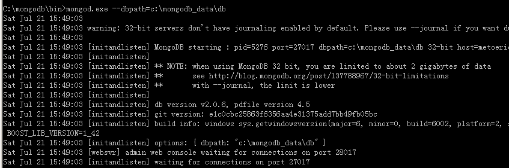
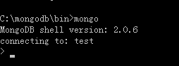

一、首先安装mongodb
1.下载地址：http://www.mongodb.org/downloads
2.先将下载的文件安装。
3.创建文件夹d:\mongodb\data\db、d:\mongodb\data\log，分别用来安装db和日志文件，在log文件夹下创建一个日志文件MongoDB.log，即d:\mongodb\data\log\MongoDB.log
4.运行cmd.exe进入dos命令界面，执行下列命令
> cd d:\mongodb\bin
> d:\mongodb\bin>mongod -dbpath "d:\mongodb\data\db"

看到类似的信息，则说明启动成功，默认MongoDB监听的端口是27017，mysql的是3306
5.测试连接
新开一个cmd窗口，进入mongodb的bin目录，输入mongo或者mongo.exe，出现如下信息说明测试通过，此时我们已经进入了test这个数据库，如何进入其他数据库下面会说。

输入exit或者ctrl+C可退出。
6.当mongod.exe被关闭时，mongo.exe 就无法连接到数据库了，因此每次想使用mongodb数据库都要开启mongod.exe程序，所以比较麻烦，此时我们可以将MongoDB安装为windows服务
还是运行cmd，进入bin文件夹，执行下列命令
> d:\mongodb\bin>mongod --dbpath "d:\mongodb\data\db" --logpath "d:\mongodb\data\log\MongoDB.log" --install --serviceName "MongoDB"
这里MongoDB.log就是开始建立的日志文件，--serviceName "MongoDB" 服务名为MongoDB
接着启动mongodb服务
> d:\mongodb\bin>NET START MongoDB
打开任务管理器，可以看到进程已经启动
7.关闭服务和删除进程
> d:\mongodb\bin>NET stop MongoDB (关闭服务)
> d:\mongodb\bin>mongod --dbpath "d:\mongodb\data\db" --logpath "d:\mongodb\data\log\MongoDB.log" --remove --serviceName "MongoDB" (删除，注意不是--install了）